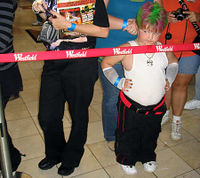

Hardysta
 De: La Frikipedia, la enciclopedia extremadamente seria.
De: La Frikipedia, la enciclopedia extremadamente seria.
| De la serie tribus urbanas del mundo:
|
| Hardysta
|
Ejemplo de la tribu

|
Niño Gay "Hardysta" al extremo.
|
|
| Hábitat
|
Donde menos imagináis.
|
| Inteligencia
|
Varía de un hardysta a otro.
|
| Frase favorita
|
Jeff Hardy Rulez!! (aún en uso).
|
| ¿Peligroso?
|
Si les llega Lalo... quera, sí.
|
| Obsesión
|
Jeff Hardy.
|
| Notas
|
Pueden venir de cualquier tribu urbana.
|
Hardysta es aquella persona súper fanática de Jeff Hardy y hace lo que sea para parecerse a su ídolo. Estas son las pistas para identificar a un hardysta:
- Se tiñe el pelo como su ídolo.
- Se tatúa los brazos como su ídolo.
- Hace el subnormal cuando le dan una escalera como su ídolo.
- Se cree guay como su ídolo.
- Se drogan como su ídolo
Características generales de todo Hardysta
- Se saben de memoria la biografía casi completa de Jeff Hardy
- se ponen en Facebook, myspace, Twitter, correo, etc. nombres generalmente tales como: sunombreHardy, jeffsunombre, jeffrey Nero hardy, etc., pero en las chicas se ponen: princessextreme x cosa, iloveyoujeff, etc, etc
- Y en los chicos como: charismaticenigma x cosa, princeextreme y similares.
- Y uno de los menos conocidos: Itchweeed
- Se pintan las uñas de negro (tanto como hombres como mujeres)y eso que no son goticos ni emos
- Los confunden con los "Emos" nomas por las manguitas que se ponen (gente ignorante)
- Cantan o escuchan mucho la canción "No more words" de EndeverafteR o la de "modest" de Peroxwhy?gen.
- Quisieran conocerlo con sus propios ojos
- Cuando dicen “Hardynero” hacen referencia a Jeff Hardy.
- Celebran el 31 de agosto.
- Hacen el gesto caracteristico
- descargan y/o publican fotos de Jeff Hardy.
- Tienen un póster pegado en su habitación de el o hacen dibujos.
- consultan paginas similares a charismatic-enigma.net
- Pueden ser fanaticos tambien de los pocos conosidos Endeverafter o de las gallinas aorcadas de Peroxwhy?gen.
- Pasan el hardystómetro minimo 75% (si quieres hacerlo busca en esta pagina Google y escribe "Test de Jeff Hardy" y ve los enlaces)
Tipos de Hardystas y sus síntomas
Hardysta poser
- Es un sabihondo
- No pasan el Hardystómetro en un minimo de 25%
- Copian la vestimenta de Jeff Hardy
- hacen sus mangas con las medias rotas de su mama
- Y por eso... son aptos para entrar a un cosplay
Hardysta Hongo a la pc
- consultan paginas similares a charismatic-enigma.net
- Buscan el último chisme de Jeff Hardy
- ponen en su pc de fondo a jeff hardy
- se apuntan o crean foros o comunidades virtuales para hablar sobre el
- Están pegados al YouTube, Sevenload o Dailymotion viendo videos de Jeff Hardy
Nota: no te los comas porque seras adicto a jeff hardy...
Hardysta Girl
Son mujeres
- Pueden tener en su habitacion un rincon privado un supermegamaxiposter de Jeff hardy con una vela prendida...
- Pueden estar enamoradas de el
- No paran de hablar de el
- Tienen un retrato de el..
- Se pintan las greñas de 256 colores
- Rondan en internet buscando una foto en donde este semidesnudo
Hardysta poeta
- Siempre escriben poemas que hacen referencia a Jeff Hardy
- Andan como babetas en las calles con su cuadernonón y lapisón con una foto pegada de en las tapas
Dibujante Hardysta
-Se entretiene haciendo sus raros y extraños dibujos sobre este greñas meadas
- Pueden ser otakus
- Lo hacen en el estilo que se les antoja: stickfigure, manga, curvo.. etc..
- y traen su cuaderno lleno de esos dibujitos
Enemigos
- Los qe nunca fallan: los Antihardystas, porque son opuestos en sus ideas hardystas
- Sus papas (no siempre)
- Los posers
Aliados
- Los jebis: Se alían con estos para dar palisas extremas (no querer saver)
- Los frikis: Por que se saben sus rollos y loqeras entre ellos
- Los góticos: si un hardysta y un gotico se hace uno, genera a un hardysta gotico, por la loquera hardysta y por la magia gotica.
- Los rockeros: Porque provocan su loquera extrema con las rolas.
- Los Pressingcatchistas: porque son descendientes directos de estos
- El perro del vecino: porque es esta su mascota y lo acompaña en sus ondas
HARDYSTOMETRO: el momento de la verdad
aqui bas a saver si eres 1 hardysta verdadero....
son solo 8 preguntas...
1. cuando nació jeff hardy????
a-29 enero de 1993
b-31 de abril de 1977
c-31 de agosto de 1977
2. Que tiene jeff hardy en la pata izquierda
a-un dragón
b-una verruga
c-un lunar
3. un alias de jeff hardy
a-El anticristo enigmatico
b-El guerrero de la melena arcoiris
c-Enigma carismatico
4.si atacaras a un antihardysta, le harias...
a-Desnucadora
b-Qebradora
c-Giro del destino
5.Algo que moririas por hacer...
a-Ser un doble de Jeff Hardy
b-Conocer a Jeff Hardy
c-Seguir siendo un hardysta
d-no me impota
RESPUESTAS:
1.C
2.A
3. CUALQUIERA ESTA BIEN
4.C
5. CUALQUIERA DE LAS 3 PRIMERAS OK
CONCLUSION:
SI DISTE EN 4 0 5: ERES UN HARDYSTA
SI DISTE EN 2-3: ERES CASI A SERLO
1 O CEROTE: NO ERES HARDYSTA... FUCHI, FUCHI
 Lucha Libre Lucha Libre 
|
 Luchadores Luchadores 
 Empresas Empresas
 Estilos de Lucha Estilos de Lucha
 Otros Otros
|
Autor(es):
- Gñapero Solitario
- Jeffhardydela21
- Not so friki
- AlbaMeiraSoireeMeira
- Jon Rusk
- Generibot
- Carlitos10
- Fdecus
- MJGo
- ELFRIKINATOR
Frikipedia 2005-2016, Licencia
GFDL 1.2 - Extraído por FrikiLeaks